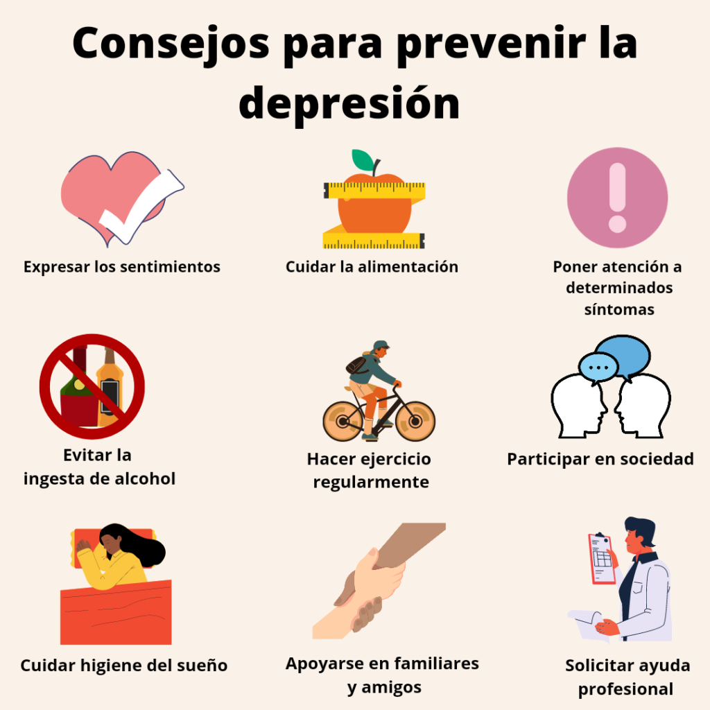

Depresion
La depresión es un trastorno mental caracterizado fundamentalmente por un bajo
estado de ánimo y
sentimientos de tristeza, asociados a alteraciones del comportamiento, del grado de
actividad y del
pensamiento.
Aparece con más frecuencia en mujeres y en personas menores de 45 años.
Supone una de las patologías más frecuentes en Atención Primaria y es la primera
causa de atención psiquiátrica y de discapacidad derivada de problemas mentales.

Los síntomas nucleares de la depresión son la tristeza patológica, la pérdida de
interés y de la capacidad de disfrutar y una disminución de la vitalidad que limita
el nivel de actividad y produce un cansancio exagerado, que aparece incluso después
de realizar pequeños esfuerzos.
- Tristeza patológica.
- Pérdida de interés.
- Disminución de la vitalidad.
- Cansancio exagerado.
Encontrarse en un momento determinado más triste o con el estado de ánimo más bajo
no es suficiente para un diagnóstico de depresión.
- Entrevista diagnóstica.
- Descarte de enfermedad orgánica mediante: pruebas diagnósticas y valoración por
- otros especialistas.
- Pruebas de psicodiagnóstico.